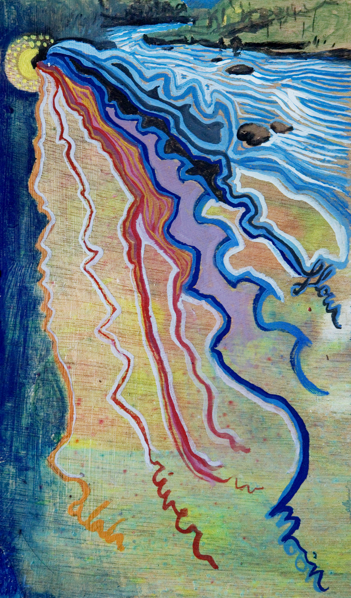

My Writings
The World is Your Oracle
Fair Winds Press published my book The World is Your Oracle: Divinatory Practices for Tapping Your Inner Wisdom and Getting the Answers You Need in April, 2017. I’m excited to share it.
The goal of The World is Your Oracle is to bring the joys and wisdom of divination into our daily lives… and trusting the answers we receive so that we may create happy, fulfilled, purposeful lives
I wrote this book because I know everyone has burning questions. Everyone wants to find the answers. And everyone needs to know their own truth. The World is Your Oracle enables seekers to do just that: craft their own questions, delve into their inner wisdom, and find the answers they need. It’s a multiple-technique approach designed for each individual's distinctive experiences and desires.
Instead of a single oracular system, The World is Your Oracle gathers together 40 divinatory practices from around the world. When doing a reading, you’re not selecting a pre-programmed answer, like with tarot cards or runes. Rather you experience a particular method of "finding" what you seek. The book assembles multicultural, multireligious techniques that range from ancient oracles to my own contemporary innovations.
Beginners will find many straightforward ways of connecting with their inner wisdom in The World is Your Oracle – methods as simple as
- sculpting clay
- noticing a creature while walking in nature
- or simply overhearing a conversation
Those already practiced in divination may discover many new oracles that expand their intuitive skills. These open-ended techniques include
- listening to rustling leaves
- watching the movements of an object blown by the wind
- or dancing ecstatically
Together The World is Your Oracle offers you many new ways of asking, answering, and understanding.
The World is Your Oracle is a "culmination of second wave feminist spirituality: a system that empowers people to empower themselves."
So, of course, I want as many people as possible to benefit from the "joys and wisdom of divination" contained in this compilation of 40 oracular techniques. Read more about it here.